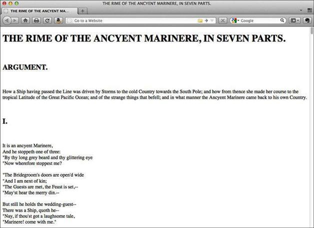

9.3 追加标签
现在我们要在诗文的结尾添加一些标签。使用追加命令（a\），$会查找文件的结尾（最后一行），然后在最后一行添加</body>和</html>标签：
sed '$ a\
<\/body>\
<\/html>\
' rime.txt
以下就是文件结尾部分：
He went, like one that hath been stunn'd
And is of sense forlorn:
A sadder and a wiser man
He rose the morrow morn.
</body>
</html>
关于sed的内容就讲到这里了。
要是想同时完成这些修改呢？你知道怎么做了，而且也做完了。其实只要将这些命令放入一个文件中，然后使用sed的-f选项即可。
使用sed命令文件
以下是html.sed文件的内容，包含前面所有的sed命令和另外两个命令。我们将用这个命令文件通过sed把rime.txt转换为HTML。文件中的编号便于解释这个sed脚本。
#!/usr/bin/sed ①
1s/^(.*)$/<!DOCTYPE html>\ ②
<html lang="en">\
<head>\
<title>\1<\/title>\
<\/head>\
<body>\
<h1>\1<\/h1>\
/
s/^(ARGUMENT|I{0,3}V?I{0,2})\.$/<h2>\1<\/h2>/ ③
5s/^([A-Z].*)$/<p>\1<\/p>/ ④
9s/^[ ]*(.*)/ <p>\1<br\/>/ ⑤
10,832s/^([ ]{5,7}.*)/\1<br\/>/ ⑥
833s/^(.*)/\1<\/p>/ ⑦
13,$s/^$/<br\/>/ ⑧
$ a\ ⑨
<\/body>\
<\/html>\
① 命令的首行是shebang行，它提示shell可执行文件（sed）的位置。
② 替换命令（s）会用随后的标签替换该行文本。反斜线（\）表示你要添加的文本会延续到下一行，因此要插入换行符。用\1将第1行诗文的题目作为title和h1的内容插入。
③ 用h2标签包括标题和罗马数字。
④ 第5行中用p标签包括介绍段落。
⑤ 第9行中在起始处添加p起始标签，在行尾添加br标签。
⑥ 第9行至第832行，在以多个空格起始的行的结尾处添加br标签。
⑦ 在诗的结尾附加p结束标签。
⑧ 在第13行后，每一个空行都用br标签代替。
⑨ 在文件结尾（$）附加几个标签。
要对rime.txt使用该命令文件，则输入下面一行，然后回车（Enter或Return）：
sed -E -f html.sed rime.txt
将输出重定位到文件：
sed -E -f html.sed rime.txt > rime.html
在浏览器中打开rime.html看看你创建的内容（见图9-1）。

图9-1 在Firefox中打开rime.html